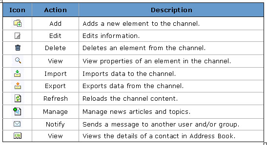

Icons are placed prominently within each of the channels. These icons are used to perform certain actions, whether it be to add an announcement, delete a calendar entry, or post a message to the discussion forum (to name a few). The following table lists the primary icons you will encounter in your use of the Academus channels and provides a general description of their use.
